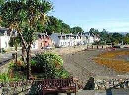
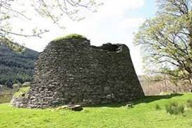
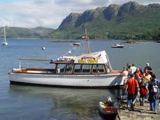
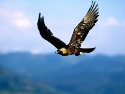
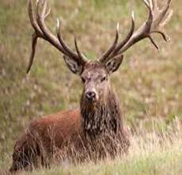
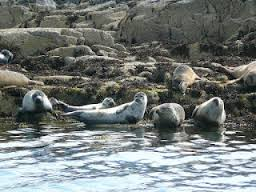
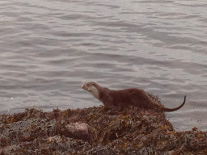

Local Activities
Eilean Donan Castle
Eilean Donan Castle is a historic castle walking distance from Birchwood Holiday Cottage.
Beaches
Beaches can be found at Glenelg, Ashaig and Applecross.
Hiking
Tremendous hikes for all ability levels can be found in the surrounding Highlands, such as around Kintail, Lochalsh and Glen Shiel
The Isle of Skye
The renowned Isle of Skye offers dramatic landscapes and historic sites. Take a scenic drive or hike to experience its natural beauty and rich heritage.
Plockton Village

The Brochs of Glenelg

The ancient Brochs of Glenelg are some of the oldest, best preserved stone structures in Scotland, built as early as 400BC and no later than 200AD.
Boat Trips

Boat trips are available from nearby Plockton, offering stunning views of the coastline and opportunities to see local wildlife.
Wildlife
The surrounding scottish highlands are home to the most diverse range of wildlife in the country, with over 6,000 species to be found.
Cafes and Restaurants
There are several cafes and restaurants in the area where you can enjoy a meals and snacks while taking in the scenic views.
Wildlife



